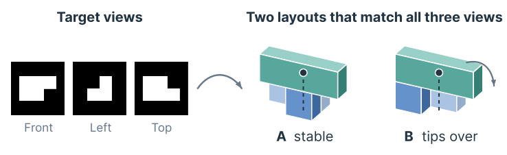
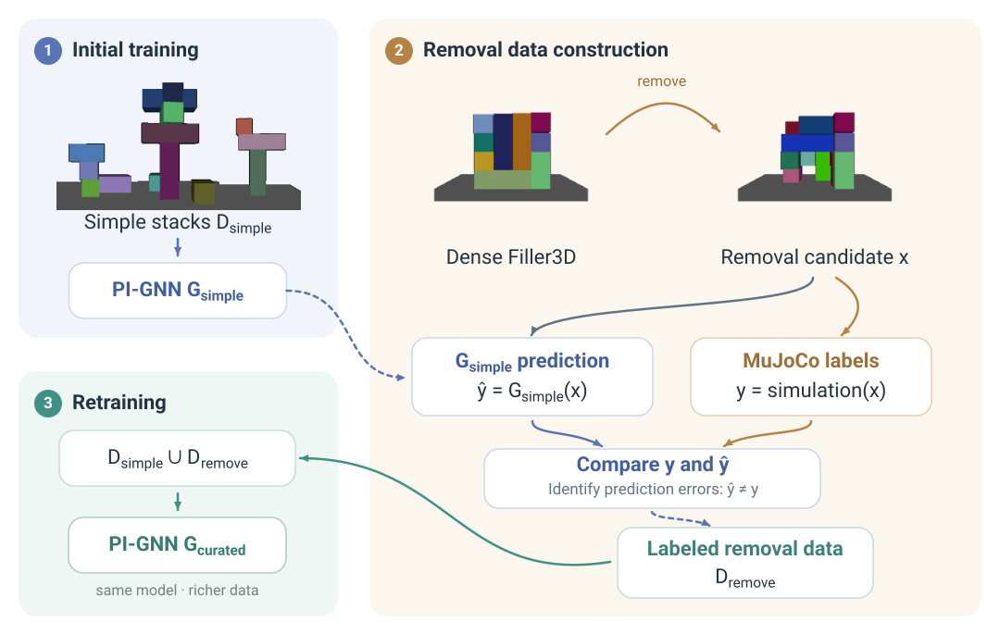
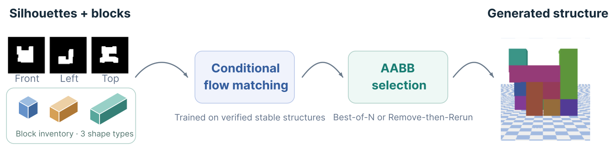
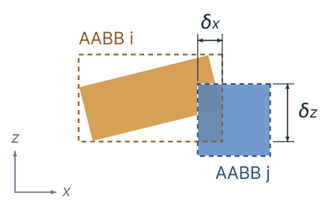
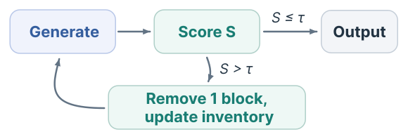
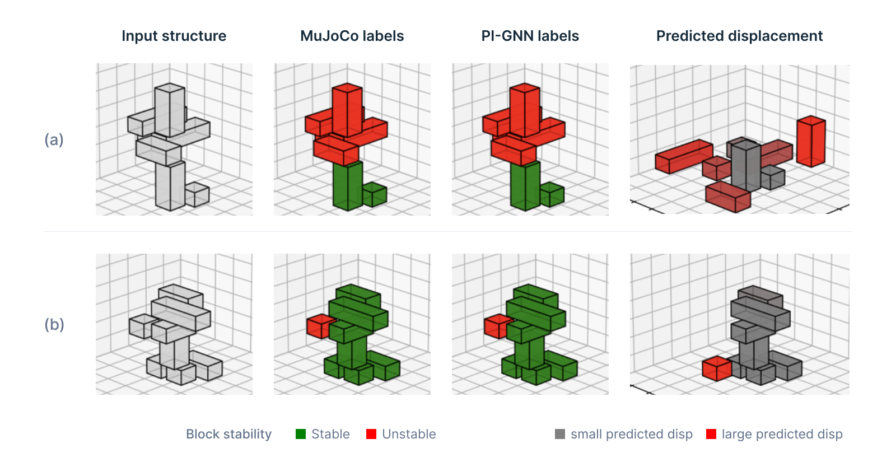
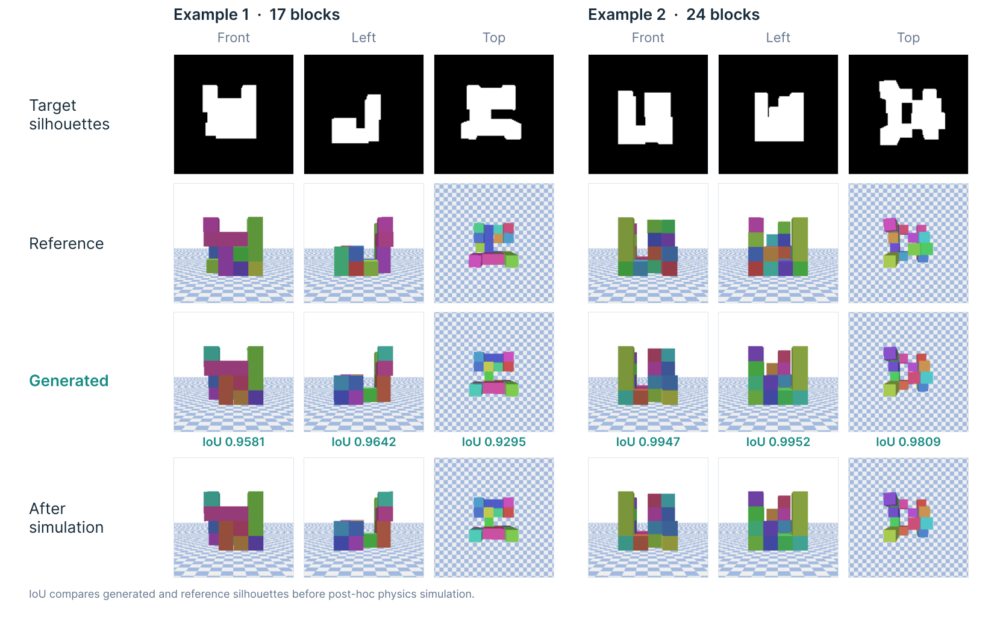
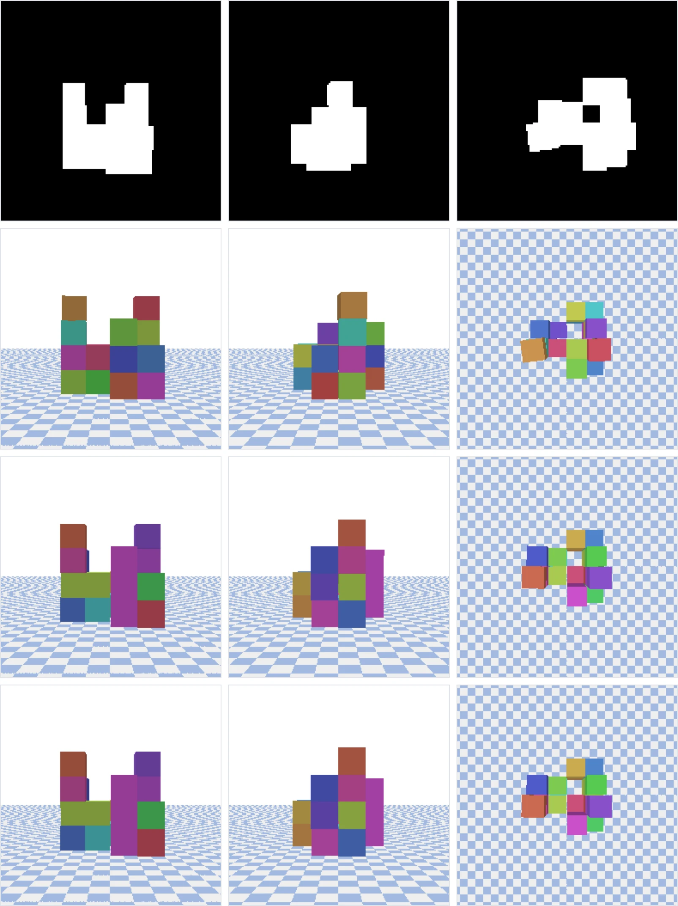

StackGen3D: Stable 3D Block Stack Generation from Multiview Silhouettes
1Toyota Technological Institute at Chicago 2Stanford University
*Equal contribution. This work was done while Xiaopeng Zhang was an intern at TTIC.
Motivation
Creative assembly often starts from an incomplete specification, such as a sketch or a silhouette, rather than a full 3D model [1, 2]. We study a concrete case: a fixed block inventory and three orthographic silhouettes.

Silhouettes do not pin down a layout
Many block arrangements give nearly identical projections, so we model a distribution over layouts, not a single answer.
A matching layout can still fall
Only some arrangements avoid interpenetration and stay stable under gravity.
Stable training data is costly
Checking every candidate in a physics simulator is slow and hard to scale.
Method
StackGen3D has two stages: it first builds a large dataset of stable structures, then learns to generate from it.
Stage 1
Stable data construction
Whether a block stays in place depends on how its neighbors support it and on the load passed through those supports. We represent each structure as a directed support graph and train a physics-informed graph neural network (PI-GNN) [3, 4] to predict each block's stability and displacement. Nodes encode block geometry, pose, mass, and accumulated supported mass; edges encode support relations such as contact area and relative displacement.

-
Initial training
Train Gsimple on balanced simple stacks Dsimple, built by a COM-based heuristic and labeled in MuJoCo [5].
-
Removal data
Remove blocks at random from dense Filler3D structures and label every candidate in MuJoCo. Comparing the Gsimple prediction ŷ with the label y only identifies errors; every successfully simulated candidate enters Dremove.
-
Retraining
Train Gcurated, the same architecture with fresh weights, on Dsimple ∪ Dremove.
Screen, then verify
Gcurated screens new removal candidates, and MuJoCo verifies the ones it keeps. Each stable structure is paired with its three silhouettes to form the training set for generation.
- ≈50k
- structures
- 40 h
- on a single A4000 GPU
- 3–5
- initial Filler3D size
Stage 2
Conditional generation

Conditional flow matching
The mapping from silhouettes to structures is one-to-many, so we learn a distribution over block poses. Let x1 be the poses of a simulator-verified stable structure, a position and a quaternion per block, and let x0 ∼ N(0, I) be Gaussian noise. The model learns a velocity field vθ:
At inference, an ODE solver [7] integrates vθ from t = 0 to 1, conditioned on the block inventory S and silhouettes I. New noise gives a different structure.
Joint self-attention over silhouettes and blocks
The velocity field is a Transformer [6]. Each silhouette view is split into patch tokens, and each block gets one token with its shape, current pose xt, and time t. The two token sets are concatenated and processed with joint self-attention; each block's output token gives its velocity.
front · left · top
shape, xt, t
AABB-based inference

Generated structures can still contain inter-block penetration. We score each sample by geometry alone: for blocks i and j, the pair depth is the smallest per-axis overlap of their AABBs (0 if they do not intersect), and the structure score is the worst pair.
Best-of-N
Draw N samples with different noise for the same silhouettes and inventory, and keep the one with the smallest S.
Remove-then-Rerun
If S > τ, use the largest AABB overlap to pick one block to remove, update the inventory, and resample the reduced set until S ≤ τ or no blocks remain.

Neither procedure calls a physics simulator or the PI-GNN, and neither guarantees physical stability. PyBullet [8] is used only afterward, for evaluation.
Results
PI-GNN transfers from simple to complex structures
We compare Gsimple with a parameter-matched MLP trained on the same simple stacks (261,576 vs. 261,383 parameters), and with Gcomplex, the same PI-GNN architecture trained directly on complex structures. Since 85.1% of blocks in the complex data are stable, we also report balanced accuracy. The two models perform similarly on simple stacks, but Gsimple transfers far better and approaches Gcomplex; the BAcc gap shows that complex-domain training still helps identify unstable blocks.
Trained on simple stacks, tested on complex structures
Accuracy (Table II, Exp. A)

Table II. Block-level stability-prediction baselines.
| Exp. | Training domain / model | Test domain | Acc. (%) | BAcc. (%) | F1 (%) |
|---|---|---|---|---|---|
| A | Simple / MLP | Simple | 89.81 | 89.60 | 89.16 |
| Simple / Gsimple | Simple | 90.01 | 87.81 | 88.90 | |
| Simple / MLP | Complex | 46.86 | 67.22 | 45.05 | |
| Simple / Gsimple | Complex | 92.66 | 86.12 | 85.65 | |
| B | Simple / Gsimple | Complex | 92.66 | 86.12 | 85.65 |
| Complex / Gcomplex | Complex | 97.58 | 93.76 | 95.07 |
BAcc = ½(TPR + TNR). Bold marks the best result within each experiment on complex test data.
Generation without online simulation
45.30% → 72.40%
Post-hoc stability, single sample → Best-of-10
+27.1 percentage points
0.967
Silhouette IoU from a single sample
0.970 with Best-of-10
We evaluate 10 folds × 100 samples. Inference uses only AABB overlap; PyBullet [8] simulates each output afterward to measure stability. A single sample already follows the silhouettes closely, and Best-of-10 raises stability with essentially unchanged IoU, so the learned distribution contains more physically viable modes than one sample shows. Remove-then-Rerun also improves stability, at a modest cost in IoU. Beyond N = 10, penetration keeps falling while stability does not rise monotonically: AABB overlap is a useful but incomplete proxy for stability (see why).
Table I. Best-of-N generation (mean ± std over 10 folds, 100 samples per fold).
| Inference method | Stability (%) | IoU | Penetration |
|---|---|---|---|
| Single sample (N = 1) | 45.30 ± 4.10 | .967 ± .002 | .711 ± .066 |
| Best-of-5 | 66.70 ± 4.61 | .970 ± .002 | .134 ± .026 |
| Best-of-10 | 72.40 ± 4.63 | .970 ± .002 | .064 ± .016 |
| Best-of-25 | 67.80 ± 5.15 | .970 ± .002 | .034 ± .005 |
| Best-of-50 | 69.30 ± 4.94 | .969 ± .002 | .028 ± .003 |
| Best-of-100 | 66.00 ± 4.05 | .969 ± .003 | .025 ± .002 |
| Remove-then-Rerun | 64.60 ± 4.13 | .953 ± .004 | .099 ± .009 |
Stability is evaluated post hoc in PyBullet; IoU is silhouette IoU. Remove-then-Rerun removes blocks, so its outputs use a reduced inventory. Best values in bold.
Why does stability peak at N = 10?
The AABB score only penalizes overlap. A gap between blocks scores the same as a clean contact, S = 0. With few samples, the kept sample often still has interpenetrating blocks, which the simulator pushes apart. As N grows, the lowest-score sample tends to have blocks spread apart, including floating blocks with no support from below, which drop when simulated. We attribute the slight decline beyond N = 10 to this trade-off: penetration keeps falling, but floating blocks offset the gain.
Small N
Residual overlap
S > 0. The simulator pushes the blocks apart, and the stack can topple.
N ≈ 10
In contact
S ≈ 0. Blocks rest on their supports.
Large N
Floating block
S = 0, since the score cannot see the gap. The block drops when simulated.


Limitations
AABB overlap is a geometric proxy
AABB overlap penalizes interpenetration but not gaps, so it does not guarantee physical stability. Beyond N = 10, stability no longer improves, which we attribute to selected samples with floating blocks.
Evaluated in simulation only
All results come from simulation: MuJoCo for data labels, PyBullet for evaluation. StackGen3D has not been validated on a real robot.
BibTeX
@inproceedings{zhang2026stackgen3d,
title = {StackGen3D: Stable 3D Block Stack Generation from Multiview Silhouettes},
author = {Zhang, Xiaopeng and Sun, Luzhe and Xu, Yiqing and Walter, Matthew R.},
booktitle = {IROS 2026 Workshop on Creativity in Assembly},
year = {2026}
}References
- L. Sun, T. Yoneda, S. W. Wheeler, T. Jiang, and M. R. Walter. StackGen: Generating stable structures from silhouettes via diffusion. arXiv:2409.18098, 2025.
- Y. Xu, J. Mao, L. Li, Y. Du, T. Lozano-Pérez, L. P. Kaelbling, and D. Hsu. “Set It Up”: Functional object arrangement with compositional generative models (journal version). arXiv:2508.02068, 2025.
- J. Gilmer, S. S. Schoenholz, P. F. Riley, O. Vinyals, and G. E. Dahl. Neural message passing for quantum chemistry. ICML, 2017.
- M. Fey and J. E. Lenssen. Fast graph representation learning with PyTorch Geometric. ICLR Workshop on Representation Learning on Graphs and Manifolds, 2019.
- E. Todorov, T. Erez, and Y. Tassa. MuJoCo: A physics engine for model-based control. IROS, 2012.
- A. Vaswani, N. Shazeer, N. Parmar, J. Uszkoreit, L. Jones, A. N. Gomez, Ł. Kaiser, and I. Polosukhin. Attention is all you need. NeurIPS, 2017.
- R. T. Q. Chen, Y. Rubanova, J. Bettencourt, and D. Duvenaud. Neural ordinary differential equations. NeurIPS, 2018.
- E. Coumans and Y. Bai. PyBullet, a Python module for physics simulation for games, robotics and machine learning. 2016–2021.